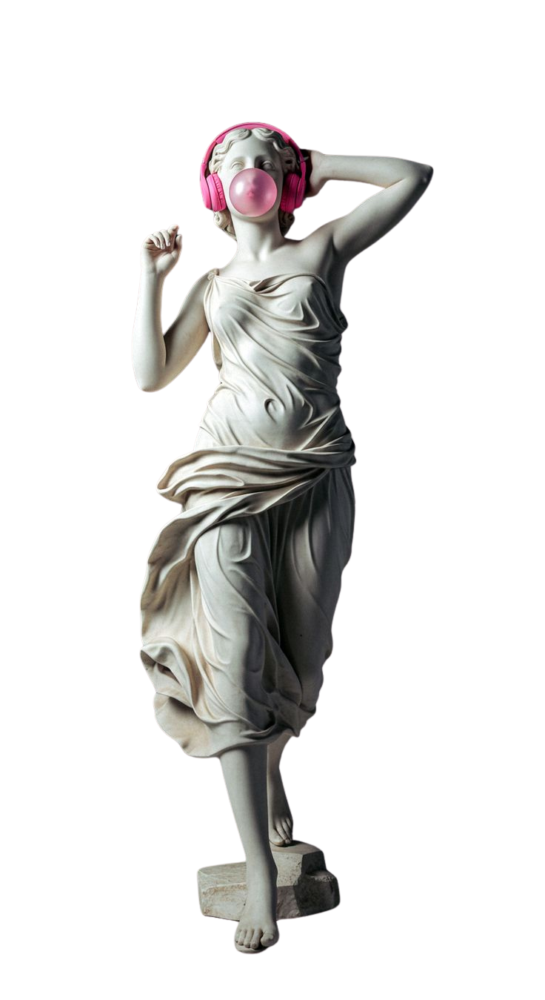

How India's #1 audio brand built market dominance in under a decade — what it says, what its customers actually hear, and the strategic silences holding it back from the next tier.
boAt didn't win by being the best-sounding earphone — it won by being the boldest brand in a category that used to be beige. This audit decodes the attitude, the design language, and the marketing engine behind India's #1 audio brand — then asks the harder question: what is all that noise not saying?
The moodboard captures boAt's world: bold display type, a red-and-black palette, and streetwear energy borrowed from music culture. It's aspirational but never distant — a brand that feels like it belongs to its audience, not above it.
Founded in 2016, boAt entered a market split between cheap, unbranded imports and expensive global players. It carved the middle — and owned it.
boAt owns the sweet spot: aspirational enough to feel like a lifestyle choice, cheap enough to out-price the giants. But that same position walls it off — there's no credible bridge up to the premium quadrant where Sony and JBL sit.
Every brand has a gap between the message it broadcasts and the message its audience receives. For boAt, that gap is where the strategy problem lives.
A brand is defined as much by what it leaves out as by what it shouts. These are boAt's strategic silences — the narratives it avoids, and why each one matters.
Almost nothing about audio quality or acoustic tech. Serious listeners don't have a reason to trust it.
No ESG or recycling story, at a time when Gen Z increasingly buys on values.
Its single biggest pain point — and it's absent from the brand narrative entirely.
No international story, which quietly caps how large the brand can feel.
Messaging skews male; roughly half the potential audience is under-addressed.
Nothing invites the customer to trade up — trapping the brand in the affordable tier.
boAt doesn't ask permission. It's loud, self-assured, and positions itself against the "overpriced, boring" establishment. The Rebel archetype explains the swagger — but also the risk: rebellion sells attention, not always trust. To move upmarket, it needs a second note the identity doesn't yet play.

"I want gear that looks as good as it sounds — without paying Sony money for a logo."
Positioned just below JBL and Sony — making the giants look overpriced while boAt looked like the smart choice.
Won search rankings, reviews, and deal placement before investing in retail — capital-light and fast to scale.
Co-founder Aman Gupta's public visibility gave boAt enormous organic reach — essentially free brand-building.
Sold earphones as fashion accessories, not electronics — with aspirational-but-relatable ambassadors.
The "boAthead" idea turned buyers into belongers, converting a transaction into an identity.
The brand promises a premium lifestyle; the product often delivers mid-tier durability. Every mismatch chips at trust.
The affordable association is so strong that moving into the ₹7,000+ tier needs a new strategy the brand hasn't built.
Brand equity leans heavily on one founder's visibility. That's a concentration risk when he steps back.
100+ SKUs and no clear hero product. Range breadth becomes range confusion.
Strong online, under-built in physical retail — where premium trust and trial are often earned.
Marketing is loud but rarely makes you feel something. There's no emotional territory that's unmistakably boAt's.
No upward mobility · premium silence.
A separate ₹7,000+ line with its own name, aesthetic and audio-first story — protecting the core while reaching a new buyer.
Promise-vs-product · service silence.
Turn the biggest weakness into a headline: a simple, visible warranty and replacement promise, marketed as proof of confidence.
Single-face dependency · weak emotion.
Move spend from Bollywood faces to credible audio and lifestyle creators who demonstrate the product — diversifying brand equity.
Sustainability silence · thin meaning.
"boAt Recycle" — trade in old devices for credit. Gives the brand a values story and a reason to feel something.
Strategy only counts if it can be built. I took one recommendation — the sustainability silence — and mocked up how "boAt Recycle" could actually run.
Trade the old.
Feel the bold.
A take-back program that turns old earbuds into credit toward new ones — giving boAt a values story it's never had, and a reason to feel something.
Distribution and timing can build a category leader faster than product superiority ever could.
The position that wins you the market can become the ceiling that traps you in it.
A brand's silences are strategic decisions — auditing them reveals where the next growth actually hides.
An independent, educational brand audit created for portfolio purposes. boAt is a trademark of Imagine Marketing Ltd. All figures are approximate, drawn from public reporting, and used here for analysis and illustration only. Not affiliated with or endorsed by the brand.